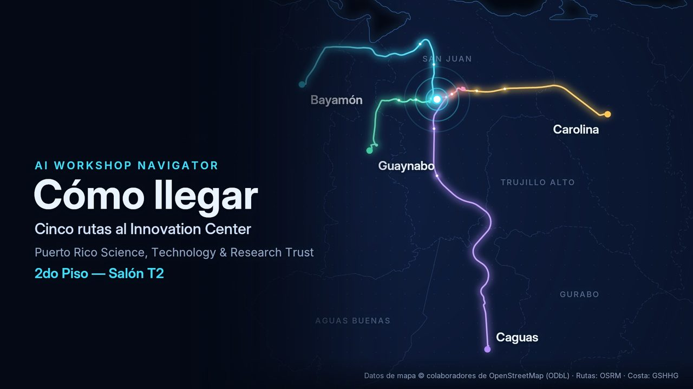
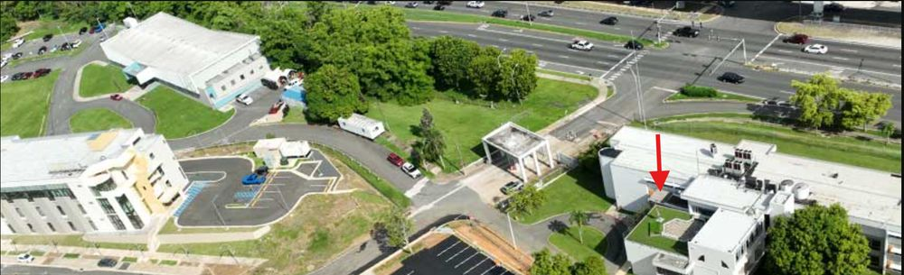
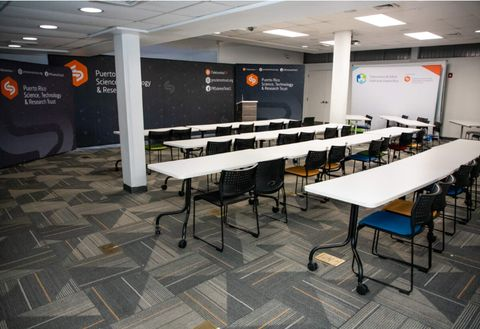

Las cinco rutas, en video
Mira en menos de un minuto cómo se llega al Innovation Center desde cada punto de partida. El video no tiene sonido.

Video disponible próximamente
Mapa: © colaboradores de OpenStreetMap, disponible bajo la Open Database License (ODbL 1.0) — openstreetmap.org/copyright. Rutas calculadas con OSRM. Línea costera: GSHHG (Wessel & Smith, LGPL). Límites municipales: Who's On First / Quattroshapes (CC BY). Ruta sugerida, estimación sin tráfico; usa Google Maps o Waze para condiciones en vivo.
Elige tu punto de partida
Cada botón abre Google Maps con la ruta en auto y el tráfico del momento.
¿Sales de otro lugar?
Google Maps calcula la ruta desde donde estés.
Estacionamiento
Las instrucciones de estacionamiento se confirmarán antes del evento.
Notas internas (solo vista previa):
Los últimos metros
Todas las rutas terminan igual. Sal con tiempo: el tráfico hacia San Juan puede variar.
- Llega a la PR-21 (Av. Ing. José “Kiko” Custodio), en el área de Centro Médico.
- Gira en el semáforo del Paseo de las Ciencias. Es a la derecha si vienes en dirección este y a la izquierda si vienes en dirección oeste.
- Poco después llegarás a la entrada principal del campus del Fideicomiso.
- Entra por la entrada del Innovation Center (mira la foto) y sube al segundo piso, al Salón de Entrenamiento T2.
Entrada al edificio

Dónde es el taller

Ojo: el taller es en el T2 (segundo piso), no en el T1 del primer piso ni en el Forward Center.
Puerto Rico Science, Technology & Research Trust105 Carr. #21, Km. 0.8, Bo. Monacillo
San Juan, PR 00927